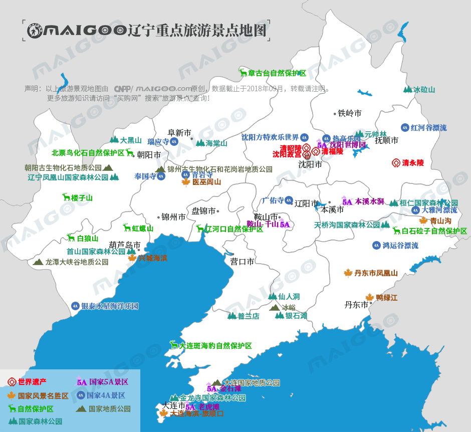

| | | | | |
| - | - | - | - | - |
|<b>别名</b>|共和国长子、东方鲁尔||<b>著名景点</b>|沈阳故宫、清昭陵、清福陵、星海广场、千山、鸭绿江、本溪水洞等|
|<b>行政区类别</b>|省级行政区||<b>机 场</b>|沈阳桃仙国际机场、大连周水子国际机场、丹东浪头国际机场等|
|<b>所属地区</b>|中国东北||<b>火车站</b>|沈阳站、沈阳北站、大连站、鞍山站、锦州站等|
|<b>下辖地区</b>|14个地级市、16个县级市、25个县||<b>车牌代码</b>|辽A－辽P|
|<b>电话区号</b>|(+86)024、0411-0429||<b>GDP</b>|23942亿元（2017年）|
|<b>邮政区码</b>|110000—125000||<b>人均GDP</b>|54800元|
|<b>地理位置</b>|中国东北地区、沿海地区||<b>著名高校</b>|大连理工大学、东北大学等|
|<b>面 积</b>|14.8万平方千米||<b>省 花</b>|天女花、君子兰|
|<b>人 口</b>|4368.9万人（2017年）||<b>省委书记</b>|陈求发|
|<b>方 言</b>|东北官话、胶辽官话||<b>省 长</b>|唐一军|
|<b>气候条件</b>|温带季风气候||-|-|
| <b>辽宁生活文化</b> | <b>辽宁特色文化</b> | <b>辽宁曲艺文化</b> | <b>辽宁建筑文化</b> | <b>辽宁宗教文化</b> |
| - | - | - | - | - |
| <a href="javascript:;" onclick="live(this);">习俗/民俗</a> | <a href="javascript:;" onclick="feature(this);">凌源皮影戏</a> | <a href="javascript:;" onclick="art(this);">辽宁辽剧</a> | - | <a href="javascript:;" onclick="religion(this);">宗教/庙会</a> |
| <a href="javascript:;" onclick="live(this);">方言文化</a> | <a href="javascript:;" onclick="feature(this);">海城喇叭戏</a> | <a href="javascript:;" onclick="art(this);">辽宁鼓乐</a> | - | - |
| <a href="javascript:;" onclick="live(this);">节日文化</a> | <a href="javascript:;" onclick="feature(this);">抚顺地秧歌</a> | <a href="javascript:;" onclick="art(this);">阜新蒙古剧</a> | - | - |
| <a href="javascript:;" onclick="live(this);">嫁娶文化</a> | <a href="javascript:;" onclick="feature(this);">庄河剪纸</a> | - |-|-|
| <a href="javascript:;" onclick="live(this);">饮食文化</a> | <a href="javascript:;" onclick="feature(this);">本溪社火</a> | -|-|-|
## <i class="fa fa-file-text-o"></i>&nbsp;目录（Table of Contents）
+ [I. 总路线图（参考"广东"）](guangdong.html)
+ [II. 景点](#two)
+ [III. 路线规划（参考"广东"）](guangdong.html)
<h2 id="two"><i class="fa fa-star-o"></i>&nbsp;景点</h2>
